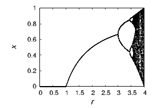
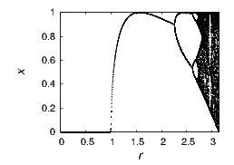

Many equations describing the behavior of physical systems cannot be solved analytically. In fact, “most” can not. Approximate solutions can still be obtained numerically. Numerical methods can be useful because they provide quantitative answers that would otherwise elude us. But they can also be valuable for another reason: they can provide new insight. One such example is given here.
A calculator or a short computer program suffices for a simple demonstration. If we repeatedly evaluate xn+1 = xn(1 - xn), starting with an arbitrary value 0 < x < 1, the number will decrease and slowly approach zero. For example, x = 0.800, 0.160, 0.134, 0.116, 0.103 … The sequence decreases because x(1 - x) < x for any 0 < x. If we try instead xn+1 = 3.1xn(1 - xn), the iteration is no longer driven toward a constant. For example, x = 0.800, 0.496, 0.775, 0.541, 0.770, … One thousand iterations later x = 0.765, 0.558, 0.765, 0.558, … The iteration settles into a periodic behavior; it alternates between two values. A yet higher prefactor, xn+1 = 4xn(1 - xn) produces x = 0.800, 0640, 0.922, 0.289, 0.822, … One thousand iterations later x = 0.456, 0.992, 0.031, 0.122, 0.428, 0.979, 0.082, 0.301, 0.841 …, which has no recognizable period. Is the period unrecognizably long? Is the transient long? Or does this iteration not approach anything at all? We are faced with a dilemma on how to interpret this numerical result and whether to trust it.
Can it be true that the iteration does not settle to a constant or into a periodic pattern, or is this an artifact of numerical inaccuracies? Consider the simple iteration yn+1 = 1 -|2yn - 1| known as “tent map.” For yn ≤ 1∕2 the value is doubled, yn+1 = 2yn, and for yn ≥ 1∕2 it is subtracted from 1 and then doubled, yn+1 = 2(1 -yn). The behavior of the tent map is particularly easy to understand when yn is represented in the binary number system. As for integers, floating point numbers can be cast in binary format. For example, the binary number 0.101 is 1 × 2-1 + 0 × 2-2 + 1 × 2-3 = 0.625. Multiplication by two for binary numbers corresponds to a shift by one digit, just as multiplication by 10 shifts any decimal number by one digit. When a binary sequence is subtracted from 1, zeros and ones are simply interchanged. (This is always true as long as the following identity is taken into account. The value of 0.011111... with infinitely many 1s is 1/2, and is in this sense identical to 0.1.) The iteration goes from 0.011001... to 0.11001... to 0.0110.... After many iterations the digits from far behind dominate the result. Hence, the leading digits take on new and new values, making the behavior of the sequence apparently random. This demonstrates that a simple iteration can exhibit “chaotic” behavior. It also shows there is no fundamental difference between a chaotic and a random sequence.
The substitution xn = sin 2(πy n) transforms the tent map into xn+1 = 4xn(1 - xn), used above and known as the “logistic map”. This transformation proves that the logistic map is indeed chaotic, because it can be transformed back to a simple iteration whose chaotic behavior is proven mathematically.
It is remarkable that the numerical solution maintains the stochastic character of the logistic map. That said, numerical simulation of the tent map is hampered by roundoff.
The behavior of the iteration formulae xn+1 = rxn(1 - xn), with increasing parameter r is readily visualized by plotting the value of x for many iterations. If x approaches a constant, then, after an initial transient, there is only one point. The initial transient is eliminated by discarding the first thousand values or so. If the solution becomes periodic, there will be several points on the plot. If it is chaotic, there will be a range of values. Figure 1.1(a) shows the asymptotic behavior for a range of parameter values. As we have seen in the examples above, the asymptotic value for r = 1 is zero, r = 3 settles into a period of two, and for r = 4 the behavior is chaotic. With increasing r the period doubles repeatedly and then the iteration transitions into chaos.
(a)
(b)
Part (b) of the figure shows a similar iteration, the sine map xn+1 = sin(rxn), which also exhibits period doubling and chaos. Many, many other iterative equations show the same behavior of period doubling and chaos. The generality of this phenomenon, called Feigenbaum universality, was not realized before computers came along.
The universality goes beyond the qualitative similarities between figures 1.1a and 1.1b; it also has specific quantitative aspects. The critical parameter values rn of the bifurcations to cycles of period 2n approach a ratio of (rn - rn∕2)∕(r2n - rn) ≈ 4.6692 as they approach r∞. Another universal constant asymptotically describes the shrinking of the width of the periodic cycles. If dn is the distance between adjacent x-values of the cycle of period 2n, then d n∕d2n converges to ≈ 2.5029. These two mathematical constants are known as Feigenbaum constants.
Once aware of the period doubling behavior and its ubiquity, one can set out to understand, and eventually prove, why period doubling and chaos often occur in iterative equations. Indeed, Feigenbaum universality was eventually understood in a profound way, but only after it was discovered numerically. This is a historical example where numerical calculations lead to an important insight. It opens our eyes to the possibility that numerical calculations can be used not only to obtain numbers and solutions, but also to make original discoveries and gain profound insights.
Brainteaser: Not every equation requires numerial methods, and we want to be able to distinguish problems that require numerics from those that do not. As an exercise, can you judge which of the following can be obtained analytically, in closed form?